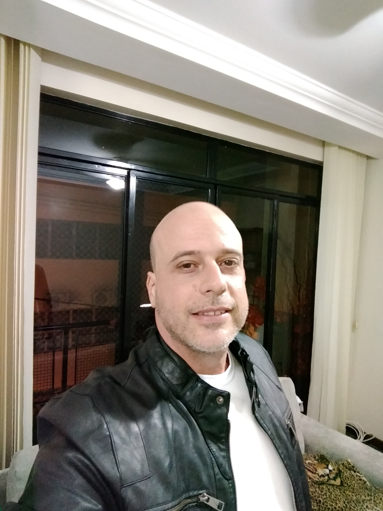

Diego Lomba Larrúbia, Esp.
Contato

E-mail: larrubiadiego@gmail.com
Tel/Whatsapp: (22)988xx-xxxx
Facebook: Diego Larrubia
Instagram: @diegollarrubia
Objetivo
Pleitear uma vaga no mercado de trabalho
Resumo das Qualificações
Atualmente Professor de Informática, Especialista em Informática em Educação, Professor na Unidade Faetec Santo Antônio de Pádua há mais de 15 anos, Diretor da Unidade Faetec Santo Antônio de Pádua no período de junho de 2015 a outubro de 2017
Formação Acadêmica
- Complementação Pedagógica - Licenciatura Plena em Matemática - 2012 - Universidade Nova Venécia - Nova Venécia/ES
- Pós-graduação lato-sensu em Informática em Educação - 2006 - Universidade Federal de Lavras - Lavras/MG
- Graduação em Informática com Ênfase em Análise de Sistemas - 2002 - Universidade Estácio de Sá - Nova Friburgo/RJ
- Técnico em Processamento de Dados - 1996 - Colégio Cenecista Caribé da Rocha - 1996 - Santo Antônio de Pádua/RJ
Experiência
- - Professor Curso Técnico em Informática na Faetec Santo Antônio de Pádua/RJ - novembro de 2017 até os dias atuais
- - Diretor do Complexo Educacional FAETEC Santo Antônio de Pádua
- FAETERJ PÁDUA (Faculdade Tecnológica do Estado do Rio de Janeiro) - período de janeiro de 2016 a outubro de 2017
- CETEP PÁDUA (Centro Educacional Tecnológico e Profissionalizante) - período de junho de 2015 a outubro de 2017
- - Professor Cursos de Formação Inicial e Continuada Faetec Pádua e Curso Ténico em Informática - período de abril de 2003 a junho de 2015
- - Gerente loja materiais de construção SaniPádua no período de novembro de 1996 a abril de 2005 - Pádua/RJ
- - Digitador na empresa Olicred Factoring no período de 1995 de 1996
- - Diagramador e Digitador na empresa Format Gráfica e Editora no período de 1992 a 1994